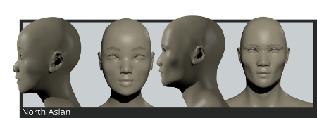
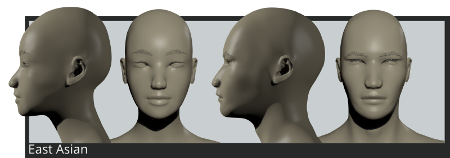

Asian phenotypes
This category of phenotypes includes Asians and Amerindians, identified by some recognizable features: ephicantal fold, flat profile, prominent cheekbones. Often the legs are shorter than the trunk, with narrow hands and feet.
Central Asian
Type mainly from central Asia, and also present in the whole Asian area.

Skull:
Mesocephal to brachycephal
Main features:
Round head, small mouth, wide face and small eyes.
North Asian
Type characterized by the cold adaptation features.

Skull:
Mesocephal to brachycephal.
Main features:
Very small eyes with "double eyelids", prominent cheekbones and a long, flat face, squaring at the bottom. Flat and broad nose.
East Asian
Type mainly diffused in East Asia and east islands.

Skull:
Mesocephal to brachycephal.
Main features:
Small nose, wide mouth, longer chin and thin lips. Presence of prominent face angle.
South Asian
Type mainly diffused in South and South-West area, in particular isles.

Skull:
Mesocephal to brachycephal.
Main features:
Fuller lips and larger eyes In comparison with previous types, a less pronounced curve to up, flat and wide nose.
Central American
Type mainly diffused in Central and South America.

Skull:
Brachycephal.
Main features:
Straight or slightly convex nose, receding forehead, broad mouth.
North American
Type mainly diffused in North America.

Skull:
Mesocephal to dolichocephal.
Main features:
Long face, pentagonoid head, receding forehead, pronounced cheekbones, convex nose, broad mouth.